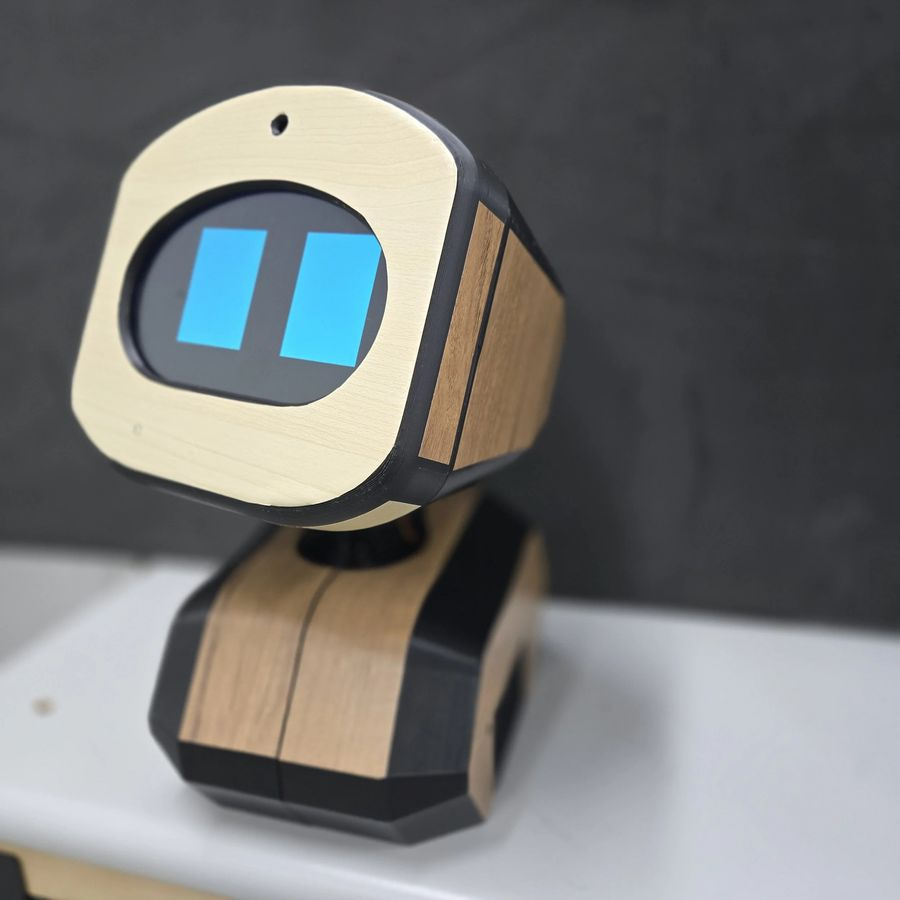
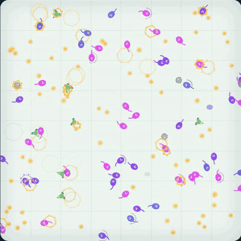
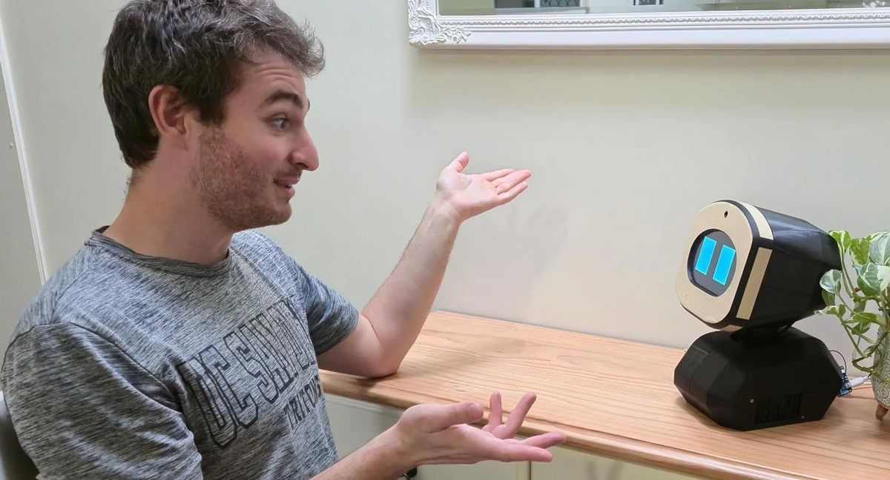

Stones Corner AI
Social robots for aged care, which I co-founded. I built the software side: a real-time voice agent, the robot's on-device services, safety monitoring for every conversation, and the cloud and apps around it.

Social robots for aged care, which I co-founded. I built the software side: a real-time voice agent, the robot's on-device services, safety monitoring for every conversation, and the cloud and apps around it.

A live tank of evolving spiking-neural-network creatures you can poke at, with an inference API and a model registry behind it. Organisms that eat survive and breed, and the best brains are benchmarked and promoted automatically.
Sentencing research for Queensland criminal lawyers, which I co-founded. An LLM pipeline turns court judgments into cited, structured data, and a practising lawyer's golden set checks every prompt change.
A small, modular spiking-neural-network simulator built around one question: what happens when several plasticity rules run at the same time in the same network? It's the engine behind Foraging Lab's brains.
An early side project: a spiking network simulator with plastic synaptic delays and weights.

In my PhD at the University of Queensland I worked on unsupervised learning in spiking neural networks with varying types and intensities of noise. Specifically, I studied how the plasticity of action potential conduction delays can be used as a functional computational mechanism, similar to weight learning in networks of spiking neurons.
I've also been principal data scientist at Vincents, a national professional services firm, where I led the team that built LLM tools for forensic accountants and lawyers. Before that I was a postdoc at the Queensland Brain Institute, where I built a pipeline that processed hundreds of terabytes of brain imaging.
I've taught at the University of Queensland for over a decade, from tutoring to running 500-student courses, and I supervise student projects there. In my spare time I like to try out new hobbies like watchmaking and 3D printing, or take my dogs out adventuring.